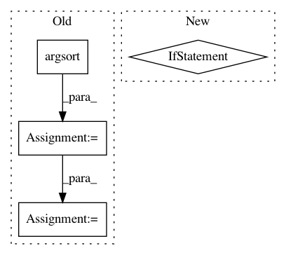

7cd15d13d91e2de78d53a5cdac661e63f64d59e8,prody/dynamics/adaptive.py,,calcStep,#Any#Any#Any#Any#Any#Any#Any#Any#,73
Before Change
Fmin = Fmin_max
overlaps = np.abs(np.dot(d, anm.getEigvecs()))
sorted_indices = overlaps.argsort()[::-1]
overlaps = overlaps[sorted_indices]
sorted_mode_indices = np.arange(anm.numModes())[sorted_indices]
normalised_overlaps = overlaps / norm(d)
After Change
if not np.any(torf_Fmin):
torf_Fmin[0] = True
if not np.all(torf_Fmin):
i = np.where(torf_Fmin)[0].max()
torf_Fmin[i+1] = True
selected_mode_indices = np.arange(anm.numModes())[torf_Fmin]
n_sel_modes = len(selected_mode_indices)
In pattern: SUPERPATTERN
Frequency: 4
Non-data size: 4
Instances
Project Name: prody/ProDy
Commit Name: 7cd15d13d91e2de78d53a5cdac661e63f64d59e8
Time: 2021-01-05
Author: shz66@pitt.edu
File Name: prody/dynamics/adaptive.py
Class Name:
Method Name: calcStep
Project Name: epfl-lts2/pygsp
Commit Name: d2c1b55c01f390a7a0e93c373b27d8f309198e7c
Time: 2017-09-03
Author: michael.defferrard@epfl.ch
File Name: pygsp/graphs/fourier.py
Class Name: GraphFourier
Method Name: compute_fourier_basis
Project Name: tensorpack/tensorpack
Commit Name: 13ee370cfcad89fe4ad2556120dd2def49e1e0a7
Time: 2019-08-07
Author: ppwwyyxx@users.noreply.github.com
File Name: examples/FasterRCNN/viz.py
Class Name:
Method Name: draw_final_outputs_blackwhite
Project Name: tensorflow/models
Commit Name: 64710c051f26a2778c03fc15ef29c4bcae01df32
Time: 2018-08-22
Author: reedwm@google.com
File Name: official/recommendation/ncf_main.py
Class Name:
Method Name: evaluate_model